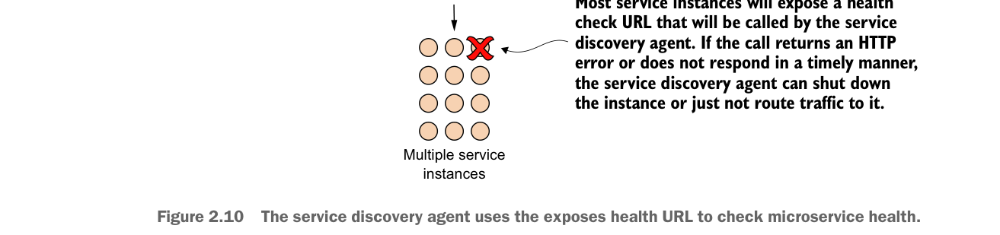

The service discovery agent uses the exposes health URL to check microservice health.
After a microservice has come up, the service discovery agent will continue to monitor and ping the health check interface to ensure that that service is available. This is step 4 in figure 2.6. Figure 2.10 provides context for this step.
By building a consistent health check interface, you can use cloud-based monitoring tools to detect problems and respond to them appropriately.
If the service discovery agent discovers a problem with a service instance, it can take corrective action such as shutting down the ailing instance or bringing additional service instances up.
In a microservices environment that uses REST, the simplest way to build a health check interface is to expose an HTTP end-point that can return a JSON payload and HTTP status code. In a non-Spring-Boot-based microservice, it’s often the developer’s responsibility to write an endpoint that will return the health of the service.
In Spring Boot, exposing an endpoint is trivial and involves nothing more than modifying your Maven build file to include the Spring Actuator module. Spring Actuator provides out-of-the-box operational endpoints that will help you understand and manage the health of your service. To use Spring Actuator, you need to make sure you include the following dependencies in your Maven build file:
<dependency>
<groupId>org.springframework.boot</groupId>
<artifactId>spring-boot-starter-actuator</artifactId>
</dependency>